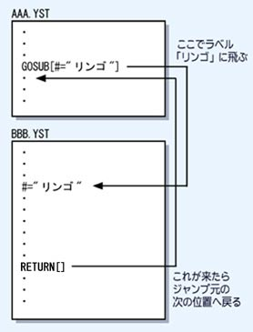

■サブルーチンジャンプ命令 GOSUB[ ]
指定したラベルの位置にジャンプし、RETURN 命令で戻ってきます。
キーワード
| # = ラベル名 | ジャンプ先のラベルを指定 |
| PINT〜PINT10 = 整数値 | ジャンプ先に渡す整数値を指定 |
| PFLT〜PFLT10 = 実数値 | ジャンプ先に渡す実数値を指定 |
| PSTR〜PSTR10 = 文字列 | ジャンプ先に渡す文字列を指定 |
例： GOSUB[#="ABC"]
指定したラベルの位置にジャンプするまでは GO 命令と同じですが、ジャンプ先で
RETURN 命令があると、GOSUB 命令の次の位置に戻ってきます。ジャンプした先に
さらに GOSUB 命令があった場合、さらにジャンプしていきます(GOSUBネスト)。
GOSUBのネストは64回まで可能です。
また、ジャンプ先にパラメータ（値や文字列）を受け渡しすることが出来ます。
GOSUB[#="ABC" PINT=50 PINT2=100 PSTR3="APPLE"]
上のように書くと、パラメータを３つ、ジャンプ先に渡すことが出来ます。
（第１パラメータ＝50、第２パラメータ＝100、第３パラメータ＝"APPLE"）
ジャンプ先（上の例だとラべル #ABC ）で、パラメータを受け取る方法として、
システム変数 @_PINT( ), @_PFLT( ), $_PSTR( ) をそれぞれ利用します。
上の命令が実行されて、実際にラベル #ABC へジャンプした時点で、システム変数
@_PINT(1) に 50 が、@_PINT(2) に 100 が、$_PSTR(3) に "APPLE" が格納される
こととなります。
GOSUB[#="いろは" PFLT=12.3 PSTR2="ゲーム" PINT3=10]
とすれば、
@_PFLT(1) に 12.3 が、$_PSTR(2) に "ゲーム" が、@_PINT(3) に 10 が格納されます。
パラメータ番号は重複しないようにしてください。
たとえば、
GOSUB[#="ABC" PFLT=12.3 PSTR="ゲーム" PINT3=10]
は、コンパイルエラーとなります。
何がいけないかと言うと、第１パラメータが２つ指定されてしまっています。
「PFLT」と「PSTR」です。パラメータ番号が重複しないように、
どちらかを第２パラメータ指定（PFLT2かPSTR2）に変更しなくてはいけません。
同様に、RETURN 命令からパラメータを受け取ることも出来ます。
RETURN[RINT=10 RINT2=20]
と記述されていれば、RETURN 命令が実行されて戻ってきた時点で、
今度はシステム変数 @_RINT(1) に 10 が、@_RINT(2) に 20 が格納されます。
※@_PINT と @_RINT との違いに注意してください。
@_PINT は GOSUB でジャンプした時に格納される変数で、
@_RINT は RETURN でジャンプ元へ戻った時に格納される変数です。
パラメータは最大10個まで受け渡しすることが出来ます。
|

|